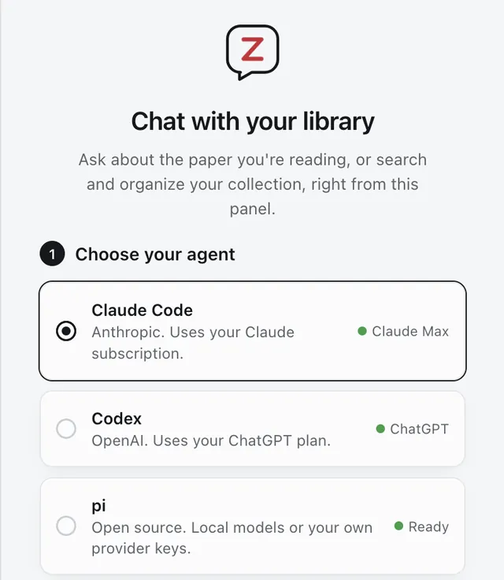
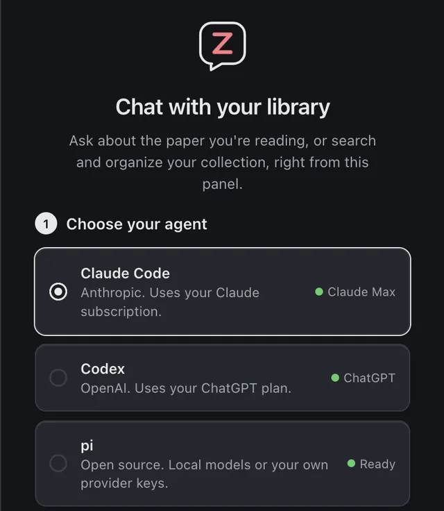
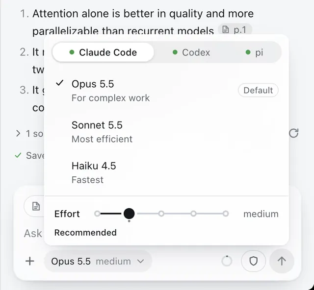
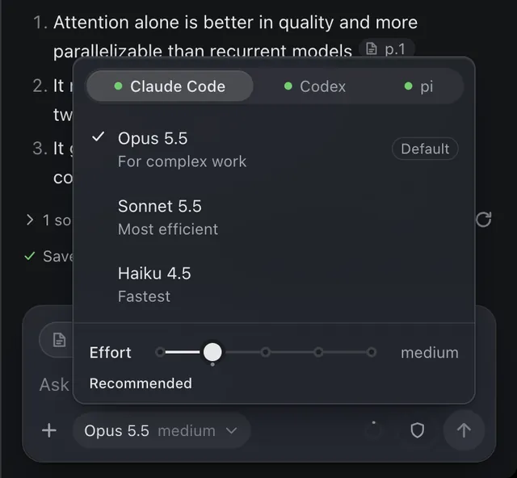

Your own AI agent, inside Zotero.
A chat panel next to the PDF you are reading. It runs the Claude Code, Codex or pi you already use, knows the page you are on, and cites every answer back to the sentence.
Reads what you read
Every capture on this page is the real plugin in Zotero, answering questions about “Attention Is All You Need”.
Ask about the page you are on
The panel sits to the right of the library and of every reader tab. Each message tells your agent what you have open: the item, the page, the text or area you selected, and the paper’s metadata and abstract.
- Select text and it is attached on its own; an area goes along as an image if you want
- Drag items from the library, or annotations from the reader’s sidebar, onto the message box
- The agent searches the paper’s text on disk and reads only the pages it needs
Citations that flash the sentence
Answers cite papers with real zotero:// links. A click opens the PDF at that page and highlights the quoted sentence for two seconds, so you can check a claim where it was made.
- The links stay valid when you paste them into a note
- A list of sources under each answer names every item cited
Translate in the reader
Select a word, a sentence or a paragraph and press Translate in Zotero’s own selection popup. The translation streams in under the buttons, into any of 18 languages.
- It uses your agent in a separate session that is told only to translate, with no tools, none of your chats and none of your skills
- Fastest available picks your agent’s fast model, such as Claude’s Haiku
Skills, prompts, and notes
Type / for your skills and saved prompts. Pin up to four: a new chat lists them under “Start with”, and Cmd+Ctrl+1 to 4 runs them from anywhere in Zotero.
- A skill is a folder with a plain Markdown
SKILL.md; your agent can write one with you - Save as note turns an answer into a Zotero note on the paper, keeping headings, tables, math, links and drawings
Your agent, on your subscription
Choose Claude Code, Codex or pi. Claude Code and Codex use the login you already have on this computer, so a Claude or ChatGPT plan covers it and there is no extra API key. pi runs local models or your own provider keys.
- One menu switches the agent and model, with an effort slider
- Prefer an API key? It is kept in Zotero’s login manager, never in preferences




Diagrams
Ask for a pipeline or a 2x2 and the agent draws it in SVG, in your theme’s colours. Save it as PNG or SVG, or add it to a note.
Math
Formulas are typeset as they stream. Hover one to copy its TeX.
Continue in a terminal
Every chat is a normal agent session. Copy terminal command gives you claude --resume and the like.
How full the chat is
A small ring shows how much of the agent’s context the chat uses, and offers a fresh chat when it fills.
Settings in one place
Glass or flat, an accent colour, backgrounds, text size. The same cards appear in Zotero’s own Settings window.
Light on Zotero
Nothing heavy loads until you open the panel, with the toolbar button or Cmd+Option+L.
Your real agent, not a locked-down chatbot
The panel adds context, a good chat view and one-click setup. Everything else is the agent you already use, with zotero-cli and its skill for the library.
A typical AI plugin
- A hosted backend, credits or a licence key
- Its own index of your PDFs, and answers from whatever it retrieved
- Only the tools the plugin chose to build
- Chats that live only inside the plugin
Zotero Agent
- Your Claude Code, Codex or pi, on the plan you already pay for
- The agent works your library through
zotero-cli: search, read pages, annotate, add by DOI, organise - Nothing is restricted: it can search the web and run commands, as in a terminal, and asks first if you want it to
- Each chat is an agent session you can resume in a terminal
Three steps, then it updates itself
You need Zotero 7 or newer, Node.js, and Claude Code, Codex or pi signed in once in a terminal. The first run checks each of these and offers a fix where it can.
-
Install zotero-mcp
The plugin ships inside the
zotero-mcp-serverpackage, withzotero-cli.$ uv tool install zotero-mcp-server -
Find the plugin
This prints where
zotero-agent.xpiis. Or download it directly.$ zotero-cli plugin --reveal -
Install it in Zotero
Tools > Plugins, the gear, Install Plugin From File, and choose the file. Then open the panel from the toolbar.
Download zotero-agent.xpi
Or let your agent do it
Paste this to Claude Code, Codex, pi or any agent with a shell. It does everything except the last click, since Zotero cannot install a plugin from the command line.
Install the Zotero Agent plugin for me. Make sure zotero-cli is installed (`uv tool install zotero-mcp-server`, or `pipx install zotero-mcp-server`), then run `zotero-cli plugin --reveal`: it prints the path of zotero-agent.xpi and shows it in my file manager. If it says the file is missing, download https://github.com/54yyyu/zotero-mcp/releases/latest/download/zotero-agent.xpi instead. Zotero cannot install a plugin from the command line, so finish by telling me the one step I do myself: in Zotero, Tools > Plugins, the gear, Install Plugin From File, and choose that file.No server. The plugin sends nothing itself.
What leaves your computer is what the agent you chose sends to its own provider, as it would in a terminal.
What the agent sees
Your messages, plus a short context block: the open item, page and selection, and the paper’s metadata. Anything else, such as PDF text, it reads with its own tools while it works.
What stays local
The panel’s chat history is in your Zotero profile. A paper’s text is extracted on your computer from the PDF already on disk, into a papers/ folder the agent reads from.
Translate
Sends the selected text, up to 6,000 characters, to the same provider. Claude and pi keep no record of those sessions; Codex keeps its usual one.
Questions
Do I need an API key?
No. Claude Code and Codex use the login they already have on your computer, so your Claude or ChatGPT plan covers the chats. If you would rather use an API key, paste it in the settings: it is stored in Zotero’s login manager and handed to the agent as an environment variable.
Which agents does it support?
Claude Code, Codex and pi, each through its Agent Client Protocol bridge, which the panel installs once into its own data folder. pi can run local models or any provider you have set up for it. The models and effort levels in the menu are the ones your account offers.
Can it change my library?
Yes, through zotero-cli: notes, annotations, tags, collections, new items. On Zotero 10, run zotero-mcp authorize-local once to allow writes. Permission requests appear as cards in the chat, and a mode setting chooses between asking every time and allowing everything.
Does it slow Zotero down?
No. At startup it adds a toolbar button and a shortcut; the chat itself loads the first time you open the panel, and the panel is closed by default.
Can I keep going in a terminal?
Yes. Every chat is a normal agent session in a folder (by default ~/Documents/Zotero-Agent). In the history list, Copy terminal command gives you the command to resume it, for example claude --resume with the session id.
How does it update?
Zotero checks for new versions of the plugin and installs them, like any other plugin.
Is it free?
Yes, and MIT licensed, like the rest of Zotero MCP. Your agent’s usage counts against your own plan or key.
Something is not working
The dot at the top of the panel opens a status page that says what is missing. If Zotero has been running for days and the panel says its local API is not responding, restart Zotero. More in the plugin guide, or ask on Discord.
Stop switching windows
Install zotero-mcp-server, add the plugin, and ask the paper you are reading.
Part of Zotero MCP
The same package gives Claude Desktop, ChatGPT and other MCP clients your library, and teaches coding agents to drive zotero-cli.